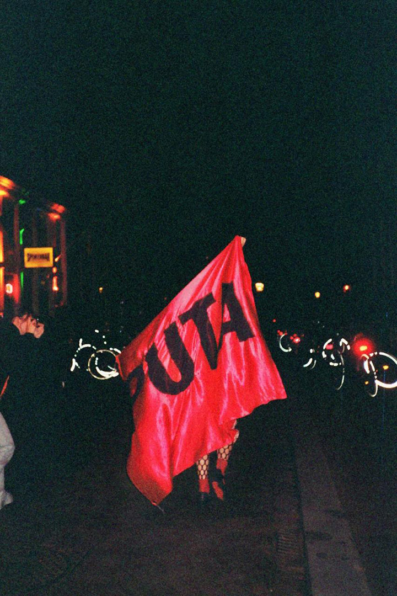

laMetro
La Metro (Cataluña, 1996) es une artiste, investigadore y activiste queer femme. Artista residente en La Escocesa, se posiciona como activista pro-sex, pro-derechos y antirracista desde una objetividad encarnada para crear dispositivos corpo-visuales entramando f(r)icciones feministas, kuir/*queers a través del arte de archivo, la performance, el audiovisual, la instalación y la mediación artística.

aa